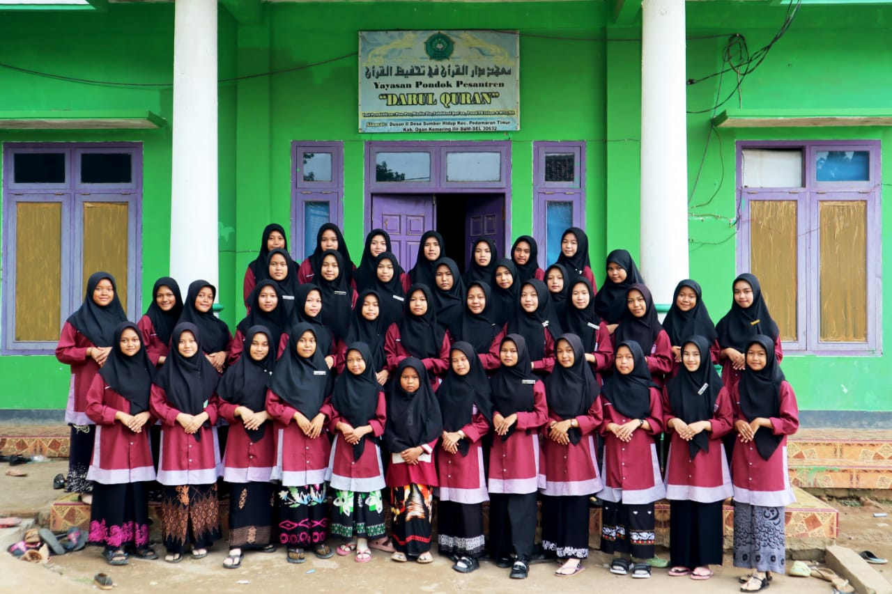

Kegiatan khitobah bulanan di mana santri membahas tema-tema penting
dan berbagi ilmu.
Program khusus untuk hafalan Al-Qur'an bagi santri, dengan
pengawasan dan bimbingan intensif.
Perayaan Maulidur Rosul yang diadakan setiap tahun untuk
memperingati kelahiran Nabi Muhammad SAW.
Kajian rutin yang membahas kitab kuning, sebagai bagian dari
kurikulum pendidikan.
Kegiatan mengaji Al-Qur'an yang dilakukan setiap hari oleh para
santri dengan bimbingan ustadz.
Madrasah Diniyah yang diadakan sore hari untuk anak-anak,
mengajarkan dasar-dasar agama.
Kegiatan nadhoman yang bertujuan untuk meningkatkan pemahaman agama
di kalangan santri.
Pembacaan Yasin rutin yang diadakan setiap minggu di pondok untuk
mendoakan kebaikan bagi semua.